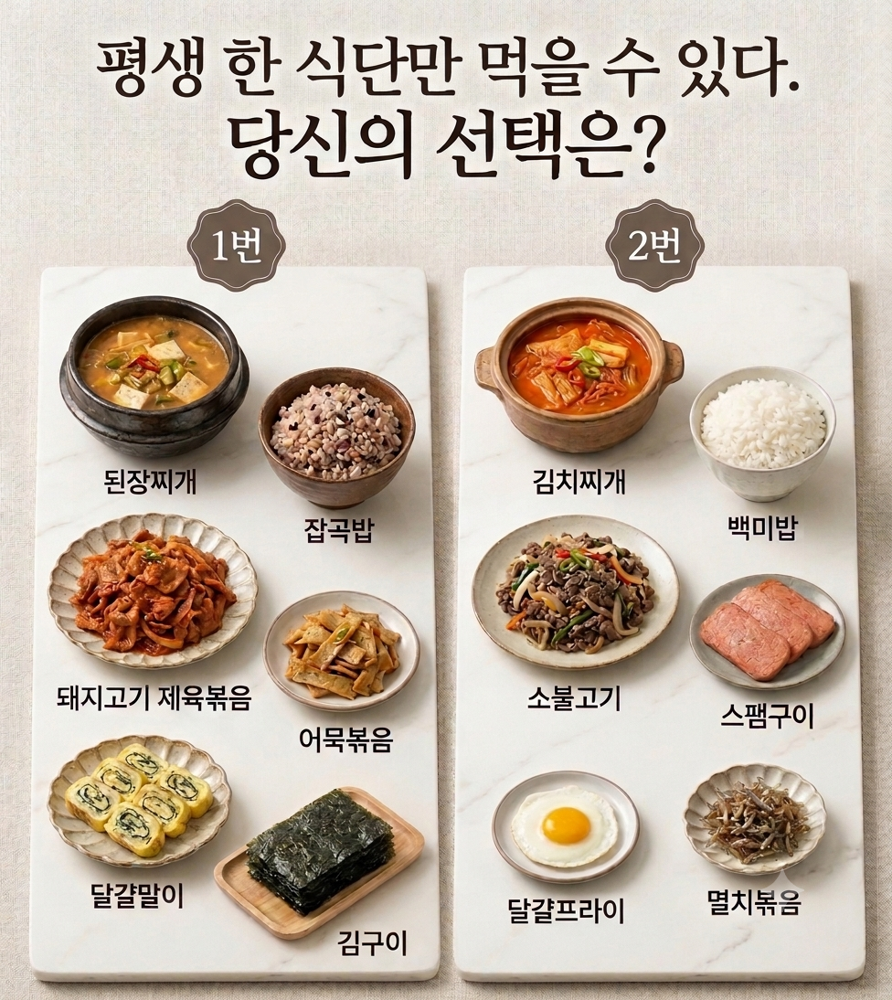

아까 올렸는데 제육이 너무 막강해서 밸런스를 새로 조절해 젬미니 한테 새로 만들어 보라고 시킴

아까 올렸는데 제육이 너무 막강해서 밸런스를 새로 조절해 젬미니 한테 새로 만들어 보라고 시킴

난 잡곡밥이어서 1번했는데 ㅋㅋㅋㅋ
이사람들 제육을 버리네
소불고기 고점이라고 해도
제육 저점이랑 비슷한데
아씨 당연히 백미에 김찌!! 하려했는데 제육이 너무 깡패다ㅜ
1111
김치나 깍두기 아무거나 추가로 준다면
1번이건 2번이건 상관없는데
그거 없으면 무조건 2번
찌게에 든거라도 김치는 먹어야지
ㄹㅇ 이거때문에 2임 둘중에 김치만 있었어도 아묻따 였음
2번이 느끼함을 잡아줄 김치찌개 궁합이 좋아
된짱찌개가 김치찌개를 못 이기니 2번
김이 대체가 안되네 아 ㅠ
2번이 맛있긴 한데 장기간 먹으라면 1번이 좋아
스팸 싫어
제육은 포기 못함
된찌는 담백함+원하면 청양고추 넣어서 칼칼하게 먹을수도 있는데
김찌는 그게 안돼
김찌가 진다고??? 맛알못 새2끼들